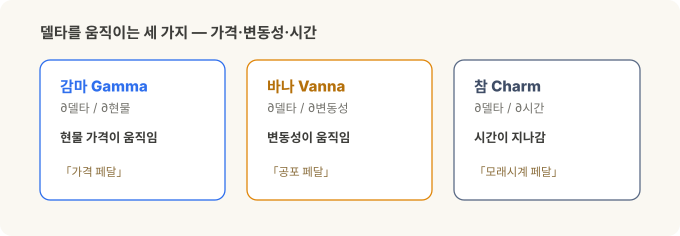
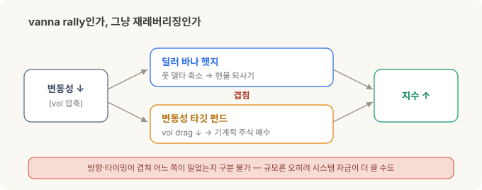
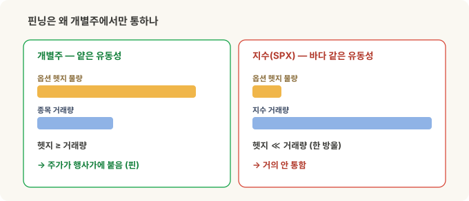
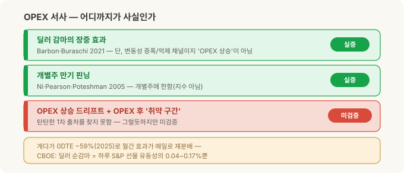
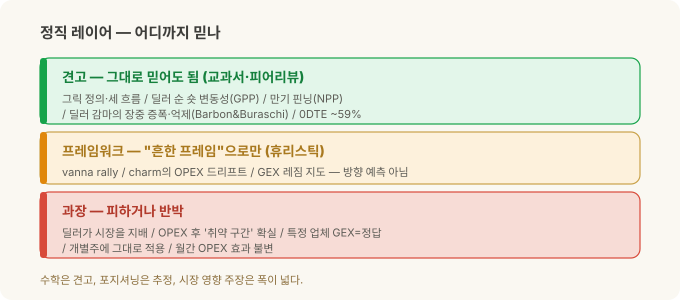

감마 너머 — 바나 랠리, 핀닝, 딜러의 진짜 손놀림¶
옵션 구조 시리즈. GEX 직접 계산하기에서 감마를, 0DTE 감마 패턴에서 장중 변화를 다뤘습니다. 이번엔 감마 너머 — 변동성과 시간이 만드는 딜러 흐름, Vanna와 Charm. 그리고 어디까지 믿을 수 있는지.
감마 이야기를 다시 떠올려 볼게요. 딜러(마켓메이커)는 방향에 베팅하지 않고, 고객이 넘긴 옵션의 위험을 기초자산으로 상쇄(헷지)합니다. 그런데 그 헷지 물량은 가만있지 않아요 — 세 가지가 딜러의 손을 계속 움직입니다.
- 감마(Gamma) — 현물이 움직일 때 델타가 바뀜 (앞의 두 글)
- 바나(Vanna) — 변동성이 움직일 때 델타가 바뀜
- 참(Charm) — 시간이 흐를 때 델타가 바뀜
가격이 가만있어도, 변동성이 내리거나 그냥 하루가 지나가는 것만으로 딜러는 매매를 하게 됩니다. 이 글은 바나와 참이 무엇이고, 언제 의미가 있고, 업계에서 종종 헤드라인으로 오르내리는 감마(gamma)·바나(vanna)·참(charm) 관련 이벤트의 사실관계를 정직하게 따져 보려는 이야기예요. (스포일러: 수학적 근거는 견고하고, 포지셔닝은 대부분 추정이며, 시장 영향은 과장이 많습니다.)
30초 요약¶
- 딜러 헷지를 움직이는 축은 셋: 감마(가격)·바나(변동성)·참(시간).
- 바나 = 변동성이 바뀌면 델타가 바뀜. 참 = 시간이 지나면 델타가 바뀜. — 여기까지는 교과서.
- "vanna rally" — 변동성이 내리면 딜러가 사서 지수를 민다는 이야기는 업계 표준 프레임워크입니다. 단, 딜러가 '변동성 숏'(시장이 잠잠하면 벌고 크게 출렁이면 잃는 자리)이라는 전제 위에서만 성립하는데, 이 전제 자체는 데이터로 확인됐어요. 문제는 그다음 — 진짜 인과인지까지는 증명된 적이 없다는 겁니다(같이 움직인다고 원인은 아니니까).
- 만기 핀닝(만기일에 주가가 특정 행사가에 자석처럼 들러붙는 현상)은 학술로 확인 — 단 개별주 기준. 지수가 OPEX(옵션 만기일, Options Expiration)로 '상승 드리프트'한다는 건 훨씬 약한 이야기.
- 결정적 반증: CBOE 자체 연구 — 딜러 순감마는 하루 선물 유동성의 0.04~0.17%에 불과. "딜러 헷지가 시장을 지배한다"는 과장입니다. 게다가 0DTE(당일 만기 옵션 — 그날 장이 끝나면 소멸하는, 만기 당일 대량 거래되는 옵션)가 SPX 옵션의 ~59%(2025)라 고전적 월간 OPEX 효과는 재분배됐습니다.
- 한 줄만 챙기세요. 그릭 계산은 믿어도 됩니다. 그런데 '지금 딜러가 롱이냐 숏이냐'는 대부분 짐작이고, '그래서 시장이 이만큼 밀렸다'는 얘기는 십중팔구 부풀려져 있어요. 뭐가 단단하고 뭐가 뻥인지는 맨 아래 표에서 갈라 뒀습니다.
세 가지 흐름 — 가격, 변동성, 시간¶
델타 헷지는 "지금 이 포지션의 델타를 0으로 맞추는" 일이에요. 문제는 델타가 세 가지 이유로 계속 변한다는 것. 수식으로 쓰면 델타의 움직임은 세 몫의 합이에요 — 가격이 만드는 몫(감마) + 변동성이 만드는 몫(바나) + 시간이 만드는 몫(참).
| 흐름 | 델타를 바꾸는 원인 | 그릭 | 주로 언제 |
|---|---|---|---|
| 감마 헷지 | 현물 가격이 움직임 | Gamma (∂δ/∂S) | 상시·장중, ATM·만기 임박에 최대 |
| 바나 헷지 | 내재변동성이 움직임 | Vanna (∂δ/∂σ) | 변동성 급변(패닉·진정), 수 시간~수일 |
| 참 헷지 | 시간이 지나감 | Charm (∂δ/∂t) | 만기 임박(OPEX 금요일·장 마감) |
감마는 앞 글들에서 다뤘으니, 여기선 나머지 둘. (이 셋으로 나누는 것 자체는 파생 교재 어디에나 나오는, 다툼 없는 정리예요.)

Vanna — 변동성이 델타를 흔든다¶
바나(Vanna)는 "내재변동성이 1 움직일 때 델타가 얼마나 변하나" 입니다. 뒤집으면 "현물이 1 움직일 때 베가(변동성 민감도)가 얼마나 변하나" 이기도 해요. 이름도 Vega + delta.
비유로: 감마가 "가격 페달"이라면, 바나는 "공포 페달". 가격 페달은 건드리지도 않았는데, 시장의 공포(변동성)가 오르내리는 것만으로 델타가 저절로 바뀌어요 — 그럼 딜러가 헷지를 다시 맞춰야 하죠.
"vanna rally"는 어떤 이야기인가¶
방향은 딜러가 어떤 포지션이냐가 정합니다. 그리고 여기 실제 보유 데이터로 확인된 사실 하나가 있어요: 기관(고객)은 지수 옵션, 특히 외가격 풋을 순매수한다 → 즉 딜러는 순 숏 변동성입니다 (Gârleanu·Pedersen·Poteshman, 2009 — "월가는 지수 변동성 숏"이라는 통념을 보유 데이터로 처음 입증한 논문).
이 포지션에선: 변동성이 내리면 풋 델타가 줄어 딜러가 헷지로 팔아뒀던 현물을 되사면서 → 이론상 상승을 민다는 논리예요. 이게 이른바 vanna rally. 변동성 급등 시엔 반대로 매도.
여기서 정직해야 할 것
딜러가 변동성 숏이라는 건 데이터로 확인됐지만, '변동성이 내려서 → 딜러가 사서 → 지수가 올랐다'는 인과를 증명한 연구는 아직 없습니다. 변동성이 쪼그라들면서 지수가 슬금슬금 오르는 그림은 그냥 리스크온일 때도 똑같이 나오거든요. 게다가 변동성이 낮아지면 위험을 더 져도 된다며 기계적으로 주식을 사들이는 펀드(리스크패리티·타깃볼)가 있는데, 이들이 사는 방향과 타이밍이 딜러 바나 헷지와 고스란히 겹칩니다 — 오히려 굴리는 돈은 이쪽이 더 클 수도 있고요. 그러니 지수가 올랐을 때 딜러가 민 건지 이 펀드들이 민 건지, 깔끔하게 가르는 건 사실상 불가능합니다. 이걸 무슨 법칙처럼 파는 업체(SpotGamma 등)의 문구는 마케팅으로 걸러 들으세요. 알아둘 만한 프레임워크는 맞지만, 기계처럼 믿을 물건은 아닙니다.

Charm — 시간만 지나도 델타가 준다¶
참(Charm)은 "시간이 하루 지나면 델타가 얼마나 변하나" (∂델타/∂시간, '델타 감쇠'). 만기가 다가오면 외가격(OTM) 델타는 0으로, 내가격(ITM)은 ±1로 쏠려요 — 아무 일도 없어도 달력이 넘어가는 것만으로 델타가 바뀝니다.
비유로: 참은 "모래시계 페달". 가격도 공포도 그대로인데, 모래가 떨어지는 것만으로 헷지가 조금씩 풀립니다. 그래서 만기 임박(특히 금요일·월간 OPEX)에 두드러져요.
여기서도 실증과 이야기를 갈라야 합니다:
- ✅ 핀닝은 진짜예요. 옵션 만기일에 개별 주가가 특정 행사가로 몰리는 현상이 학술로 확인됐고, 그 일부가 MM 델타 헷지 때문입니다 (Ni·Pearson·Poteshman, 2005; 만기일 평균 ≥16.5bp 영향, 개별주가 행사가에 핀될 확률 만기일 ~8.2% vs 평소 <6%). 참고로 핀닝은 엄밀히 참이 아니라 감마 효과예요 — 만기가 코앞이면 등가격 감마가 커져 딜러 헷지가 주가를 행사가로 되돌리거든요. 만기일에 나타나는 현상이라 이 참 섹션에 뒀을 뿐입니다.
- 🟡 단, 그건 "개별주가 가까운 행사가로 핀"되는 얘기지, 지수가 OPEX로 상승 드리프트한다는 건 훨씬 약한 휴리스틱입니다. 왜 개별주에서만 통하냐면 — 핀닝은 옵션 헷지 물량이 그 종목 자체 거래량보다 충분히 커야 주가를 특정 행사가에 붙들 수 있어서예요. 얕은 개별주에선 되지만, 유동성이 바다 같은 지수에선 헷지 물량이 한 방울이라 거의 안 통합니다.

OPEX 논지 — 사실인가, 이야기인가¶
"월간 OPEX 전 바나+참 헷지가 상승을 밀고, OPEX가 지나면 취약 구간(window of weakness)이 온다" — 이 되먹임 구조(피드백 루프) 서사는 JPM(Marko Kolanovic) 리서치에서 대중화됐어요. 무엇이 실증이고 무엇이 이야기인지 정확히 갈라봅시다.
- ✅ 딜러 감마가 장중 움직임에 영향 — 실증됨 (Barbon·Buraschi, Gamma Fragility, 2021): 딜러 감마 불균형이 장중 모멘텀(숏 감마)/되돌림(롱 감마)을 예측, 단 기초자산 유동성이 낮을수록 강함. 주의: 이건 감마의 변동성 증폭/억제 채널이지, OPEX로의 상승 드리프트가 아닙니다. (이 논문을 "OPEX 상승"의 근거로 인용하면 안 됨.)
- ✅ 만기 핀닝 — 실증됨 (위, NPP 2005).
- ⛔ OPEX로의 체계적·매매가능 상승 드리프트, 그리고 OPEX 후 '취약 구간' — 이걸 뒷받침할 탄탄한 1차 자료는 못 찾았어요. 그럴듯하게 들리지만 아직 증명된 얘기는 아니니, 곧이곧대로 믿진 마세요.
그리고 결정적으로, 0DTE(2023~2025)가 이 고전 효과를 바꿨습니다:
- 0DTE가 이제 SPX 옵션 물량의 ~59%(2025) → 헷지 압력이 월 1회 OPEX에서 매일 개장·마감으로 재분배됐어요. 한 달에 한 번 몰리던 게 매일로 흩어진 거죠.
- 무엇보다 CBOE 자체 연구: 마켓메이커 순감마가 하루 평균 $170M~$670M — 이는 하루 S&P 선물 유동성(~$4천억)의 0.04~0.17%에 불과하고, 극단값도 1.3~1.9% 수준. 장중 급등락(갭) 증가도 없었습니다. → "딜러 헷지 물량이 시장을 지배한다"는 서사에 대한 가장 강한 반증이에요.

딜러 포지셔닝 — 어디까지가 사실인가¶
바나·참·감마 흐름은 전부 하나의 가정 위에 서 있습니다: "고객이 풋을 사고 콜을 팔면, 딜러가 반대편에 서고, 그 헷지가 예측 가능하다." 이 가정에서 아는 것과 추정하는 것을 갈라야 해요.
- 아는 것 (측정됨): 고객은 지수 옵션(특히 OTM 풋)을 순매수 → 딜러 순 숏 변동성. 실제 보유 데이터로 확인된 유일한 고리 (GPP 2009).
- 추정하는 것 (나머지 대부분): 지금 이 순간 딜러 재고는 아무도 직접 못 봅니다. 공개 체인은 행사가·그릭·거래량·OI는 보여줘도 누가 롱이고 숏인지는 안 보여줘요 — 부호는 가정입니다.
누가, 어떻게 측정하나:
- CBOE Open-Close — 직접 측정에 가장 근접(모든 거래를 주체별·매수/매도·개설/청산으로 분류). 딜러 포지션 추정의 원천 피드.
- SqueezeMetrics(GEX/DIX 대중화)·SpotGamma·MenthorQ·Tier1Alpha — 각자 독자적 '딜러 부호' 모델.
문서화된 한계 (여기가 핵심):
- 부호는 그릭의 속성이 아니라 가정 — 하나만 틀리면 레짐(롱감마=박스권 ↔ 숏감마=추세)이 통째로 뒤집힙니다. 크기는 다 "맞아 보이는데" 방향만 반대가 되는 거죠 (Chilingarian, The Sign of Dealer Gamma).
- OI는 전일 밤 스냅샷 — 장중엔 갱신 안 돼 세션 안에서 금세 실제와 어긋나기 시작합니다.
- 모든 고객 매수가 딜러에 흡수되는 것도 아님 — 커버드콜·스프레드·지수복제가 부호를 흐립니다.
- 업체마다 부호·레벨이 다름 — 둘 다 'GEX'라면서 결과가 갈려요.
- 지수(SPX)에서 가장 잘 검증됐고, 개별주에서 가장 약합니다. 그리고 GEX는 구조(변동성 민감도)를 보여주지, 다음 방향을 예측하지 않습니다.
앞의 GEX 글에서 짚은 한계 — OI는 전일 마감·방향 미상·BSM 이론 감마 — 가 바나·참엔 그대로, 한 겹 더 크게 적용됩니다. 바나·참은 감마보다 가정 위에 한 번 더 얹혀 있으니까요.
정리 — 감마 다음을 보되, 겸손하게¶
이 주제는 세 층으로 나눠 기억하면 안 헷갈립니다.
| 층 | 내용 | 태도 |
|---|---|---|
| ✅ 견고 (교과서·피어리뷰) | 그릭 정의·부호 / 세 흐름(가격·변동성·시간) / 딜러 순 숏 변동성(GPP) / 만기 핀닝(NPP) / 딜러 감마의 장중 증폭·억제(B&B) / 0DTE ~59% | 그대로 믿어도 됨 |
| 🟡 프레임워크 (휴리스틱) | vanna rally / charm의 OPEX 드리프트 / GEX 플립·레짐 '지도' | "흔한 프레임워크"로만, 방향 예측 아님 |
| ⛔ 과장·회피 | 딜러 헷지가 시장을 지배 / OPEX 후 '취약 구간' 확실 / 특정 업체 GEX=정답 / 개별주에 그대로 적용 / 월간 OPEX 효과 불변 | 피하거나 반박(CBOE 미미 데이터) |

기억할 한 가지: 바나·참의 수학적 근거는 견고합니다. 그런데 그 위에 올라간 포지셔닝은 일부만 측정되고 대부분 추정이며, 시장 영향 주장은 소박한 실증(핀닝·장중 감마)부터 업체가 부풀린 확신까지 폭이 큽니다. 장기 투자자에게 이 도구들의 가치는 매매 신호가 아니라 — 지수가 갑자기 흔들릴 때 "이게 딜러 헷지 구조 때문일 수도 있겠다, 다만 그 크기는 생각보다 작다" 라고 구조적으로, 그러나 과신 없이 이해하는 것입니다.
관련: GEX 직접 계산하기 · 0DTE 감마 패턴
출처와 표기¶
- Gârleanu, Pedersen & Poteshman, Demand-Based Option Pricing, Review of Financial Studies (2009) — 딜러 순 숏 지수 변동성의 보유데이터 실증
- Ni, Pearson & Poteshman, Stock Price Clustering on Option Expiration Dates, Journal of Financial Economics (2005) — 만기 핀닝
- Barbon & Buraschi, Gamma Fragility (2021) — 딜러 감마의 장중 모멘텀/되돌림 효과
- Cboe, Evaluating the Market Impact of SPX 0DTE Options — 마켓메이커 순감마 규모·0DTE 비중
- Chilingarian, The Sign of Dealer Gamma — 딜러 부호 가정의 취약성
- SqueezeMetrics(GEX/DIX 백서), SpotGamma·MenthorQ(방법론) — 프레임워크의 주장 참고용(근거가 아니라)
수치·비중은 시점에 따라 달라지는 근사치입니다. Cboe·SPX·VIX는 Cboe Exchange, Inc.의 상표이며 지칭 목적으로만 사용했습니다. 본 글은 교육 목적이며 특정 매매·투자에 대한 권유가 아닙니다.
용어 설명¶
- 델타(Delta) — 현물 $1 변동 시 옵션 가격 변동폭
- 감마(Gamma) — 현물이 움직일 때 델타가 변하는 정도(∂델타/∂현물)
- 바나(Vanna) — 변동성이 움직일 때 델타가 변하는 정도(∂델타/∂변동성 = ∂베가/∂현물)
- 참(Charm) — 시간이 지날 때 델타가 변하는 정도(∂델타/∂시간, 델타 감쇠)
- 베가(Vega) — 내재변동성 1 변동 시 옵션 가격 변동폭
- OPEX — 옵션 만기일(특히 매월 셋째 금요일 월간 만기)
- 핀닝(pinning) — 만기일에 주가가 큰 OI가 몰린 행사가에 달라붙는 현상
- 딜러 포지셔닝 — 마켓메이커가 고객 반대편에 서서 갖게 되는(대부분 추정) 옵션 포지션과 그 헷지 성향
이전 글: 0DTE 감마 패턴 — 장중 GEX는 어떻게 변하는가 | 다음 글: 변동성 대시보드 — Correlation + Skew 추적